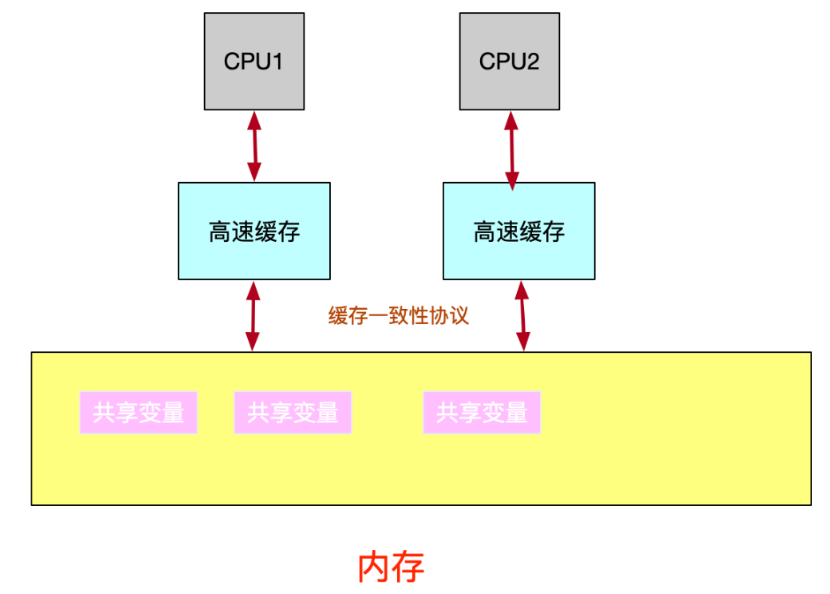
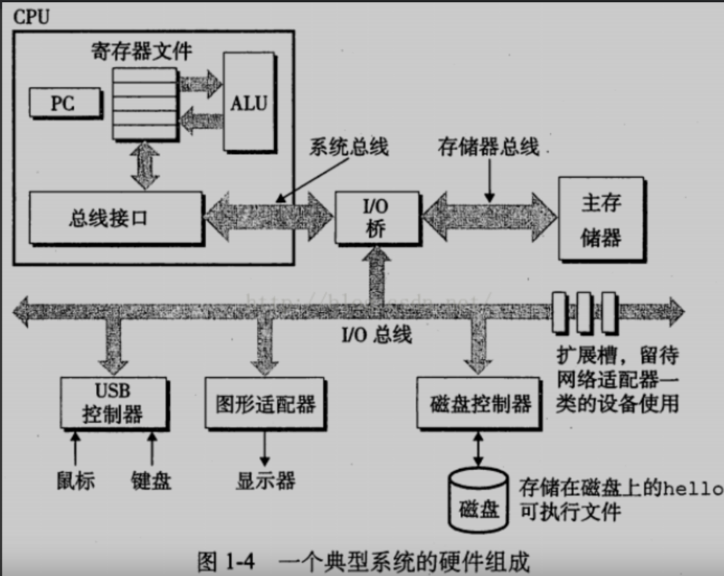
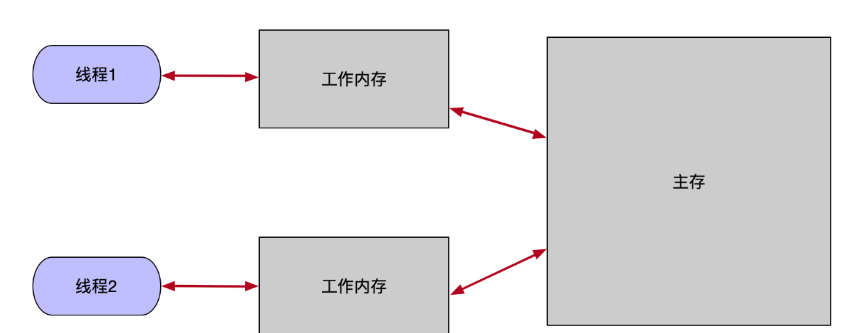
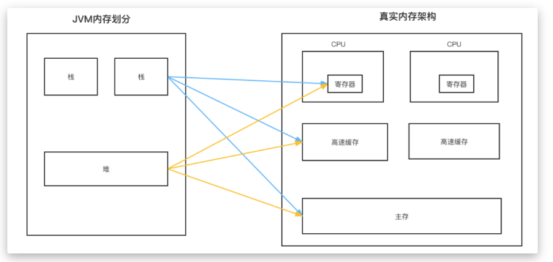

深入理解Java内存模型
深入理解Java内存模型
背景知识
处理器 2 GHz Intel Core i5
现在的CPU基本是多核的，而且CPU 运算速度远比主存（内存）读写速度快，并且速度相差了几个数量级。所以CPU 大部分时间都在等数据从主存读取，运算完数据写回内存。
所以现代计算机在CPU和主存之间加了一层读写速度尽可能接近CPU运算速率的高速缓存来做缓冲。而且CPU还有内置的寄存器存放一些计算结果。如果cpu每次需要的数据都不在缓存中，那么还不是要去主存中读取，放入缓存，岂不是多此一举？
由于长期的实验显示：程序 80% 的时间在执行 20% 的代码，所以只要把这 20% 的数据和代码放入缓存中，系统性能将会大大提升。
而且CPU访问主存时存在两个局部性现象：
时间局部性现象
如果一个主存数据正在被访问，那么近期它再次被访问的可能性也很大
空间局部性
如果某块内存被访问了，这块内存区域临近的数据也很有可能会被访问到，比如数组
局部性原理对编程的影响
- 反复引用同一个变量具有良好的时间局部性
- 对于步长为k的引用模式的程序，步长越短空间局部性越好，例如数组操作
- 对于取指令来说。循环有好的时间和空间局部性。循环体越小，循环次数越多，局部性越好


缓存一致性问题
多核cpu且有各自的高速缓存，这就会出现缓存数据不一致的问题，两个核心的线程都读取了主存中的同一个共享变量，并且都对其进行了操作，比如都读取了一个整型数据i = 0，两个线程都对其 i++，写回主存中，主存中 i 的值变为了 1，但是这是错误的，因为执行了两次++操作，i 应该为2。
如何解决缓存一致性问题
早期的做法是锁住总线，因为所有的CPU都是通过总线来操作主存的，当一个CPU访问主存中的共享变量时，其它CPU都无法访问，这样就不会有数据不一致的问题了，但是这大大降低了CPU的性能。


缓存一致性协议
缓存一致性协议有很多种，用的最多的是MESI协议(Modified修改状态、Exclusive独占状态、share共享状态、invalid无效状态)
缓存行： 高速缓存中存储数据的最小单位
MESI协议可以理解为缓存行锁，定义了缓存中的数据状态只有四种，MESI是四种状态的首字母，当CPU读取某一个缓存行时，先识别缓存行的状态：
- 失效缓存行invalid：要么已经不在缓存中，要么内容已经过时了，这种状态的行将会被忽略。相当于从来没有加载到缓存中
- 共享缓存行share： 说明该cache line是内存中某一段数据的拷贝，该状态下的cache line只能被读取不能被写入，不同的CPU的缓存都可以拥有这段数据的拷贝
- 独占缓存段exclusive： 和share状态一样，说明该cache line是内存中某一段数据的拷贝。区别在于，该cache Line独占该内存地址，如果其他CPU也持有同一份cache line，那么会变成invalid状态
- 修改缓存段modified： 表明该cache line已经被修改，当前的CPU要修改某个数据，就会发送通知给其他CPU，如果有该cache line就把该数据修改为invalid状态，如果其他CPU已经将cache line修改为修改状态，就把该数据最新值返回，并把cache line状态修改为invalid，当前CPU就收到所有通知后，获得独占权数据状态变为exclusive，开始修改数据，将数据状态修改为modified，
注意此时主存中的数据仍然是旧的。
modified已经修改状态cache line，如果被丢弃或替换或标记为invalid状态时， 要把该cache line的内容先写到主存中
如果CPU每次修改缓存数据，都要等待其它CPU的答复，这种等待同步的方式会不会太浪费CPU性能了
CPU 做了优化，采用异步的方式，把最新修改的数据写到【store buffer】中，并通知其它CPU记得更改状态，然后CPU可以继续运行，执行其它的指令。收到其它CPU的答复后，再将【store buffer】中的新数据移到 cache line。
其它CPU接收到 Invalid通知后，也会把该消息放入消息队列中，从队列取消息执行后，再通知CPU已经将状态置为 I 无效状态了。
【store buffer】可能导致破坏程序顺序的问题
如果CPU修改完A值，写到【store buffer】中，CPU去干别的事了，但是又收到指令需要修改A值，但是上一次的修改的值还在【store buffer】中，没更新至cache line。
硬件工程师在store buffer的基础上，又实现了【store forwarding】技术，CPU 在读取操作时，需要先去【store buffer】里查看一下是不是有自己更新过的数据，支持将CPU
存入【store buffer】的数据传递（forwarding）给后续的操作，而不经过 Cache 高速缓存。
这种异步机制对于多核CPU的情况，还是会有问题：
问题1 【store buffer】不及时更新到内存导致：
如果CPU1改了某个值，但是还没有更新到主存中，CPU2 就算收到了Invalid 指 令，也发送了应答，但是CPU2再次读取该数据时，由于是Invalid 状态，从内存 中读取到的数据仍然是旧值。
问题2【invalid queue】不及时读取队列中的消息导致：
如果CPU1更改了某个数据，CPU2也收到了消息并且放在了【invalid queue】中， 但是CPU2这时还没执行到处理【invalid queue】中的消息，就对该数据进行了读取，导致读到的是旧值。
由于这种异步优化机制，导致后面的指令不知道前面指令的执行结果，指令执行的顺序不是代码执行的顺序，导致了【CPU乱序执行】。
如何解决CPU乱序执行问题（可见性问题）
要保证指令执行顺序的一致性，硬件优化不了了，我们在软件层面提供支持。
这个问题的关键是CPU修改完数据放入【store buffer】后，没有及时更新到主存，那我们如果给它一个指令强行把缓存区【store buffer】的数据更新到主存，强行把【invalid queue】的消息都处理掉。通过这些操作，保持当前CPU的缓存状态是一致的。读到的数据一定是最新的。
这种指令（操作系统层面）就是内存屏障，save fence【写屏障】、load fence【读屏障】，mfence【读写屏障】简单的理解就是：
【写屏障】：CPU执行到写屏障指令时，会把该指令之前存在于【store buffer】所有的数据刷入高速缓存中。
【读屏障】：CPU执行到读屏障指令时，把该指令之前存在于【invalid queue】所有的指令都处理掉，及时把已经被别的CPU修改过的数据置为无效 Invalid 状态。
多核CPU下我们有了缓存一致性协议如 MESI 和各种内存屏障，解决了多核CPU的缓存一致性，为什么还需要 java 关键字 volatile ？
为了优化程序性能，对原有的指令顺序进行优化【重排序】，但是【重排序】可能发生在多个阶段，并不只是操作系统层面的CPU指令重排序，也有可能是编译阶段的重排序，比如 java 的字节码指令重排序，所以需要一个更高层面—语言层面的支持，来保证内存可见性。
volatile 是java语言层面来定义的，实现 volatile 底层也需要依靠 MESI，但是有的CPU是单核的，通过锁总线实现内存可见性，Volatile 屏蔽了这些硬件差异，Java 程序员需要使用共享变量，让该变量的修改对于其它线程可见时，只需要使用 volatile 关键字就行，而不用去担心底层操作系统是什么，硬件是如何实现内存可见性的。
Java内存模型
为什么需要Java内存模型 （Java Memory Model
Java 内存模型，简称JMM，是java并发编程的核心，是java定义的一套协议或者规范，用来屏蔽各种硬件和操作系统的内存访问差异，让java程序在各个平台都有一致的运行效果。
目的是解决多线程存在的原子性、可见性（缓存一致性）、有序性。
Java内存模型规定：所有的变量都存储在主内存中，每个线程有自己的工作内存，线程的工作内存保存了该线程执行使用到的变量（主内存的拷贝），线程对变量的所有操作都必须在工作内存中执行，不能直接读写主内存的变量，线程之间无法直接访问对方工作内存中的变量，线程间变量值的传递需要在主内存中完成。


【工作内存】和 【主内存】是对计算机存储的抽象概念模型，并不是指单一的内存
JVM内存划分中的堆和栈，堆是线程共享的，栈是线程私有的，实际上堆可能包括CPU寄存器、CPU高速缓存、主存，本地线程栈空间也可能包括这些。


线程本地内存和物理真实内存的关系
- 初始变量首先存储在主内存中；
- 线程操作变量需要从主内存拷贝到线程本地内存中；
- 线程的本地工作内存是一个抽象概念，包括了缓存、寄存器、store buffer(CPU内的缓存区域)等。
变量如何从主存拷贝到工作内存
一个变量如何从主内存拷贝到工作内存、如何从工作内存同步到主内存之间的实现细节，Java内存模型定义了以下八种操作（单一操作都是原子的）来完成：
- lock（锁定）：作用于主内存的变量，把一个变量标识为一条线程独占状态。
- unlock（解锁）：作用于主内存变量，把一个处于锁定状态的变量解除锁定，解除锁定后的变量才可以被其他线程锁定
- read（读取）：作用于主内存变量，把一个变量值从主内存传输到线程的工作内存中，以便随后的load动作使用
- load（载入）：作用于工作内存的变量，它把read操作从主内存中得到的变量值放入工作内存的变量副本中。
- use（使用）：作用于工作内存的变量，把工作内存中的一个变量值传递给执行引擎，每当虚拟机遇到一个需要使用变量的值的字节码指令时将会执行这个操作。
- assign（赋值）：作用于工作内存的变量，它把一个从执行引擎接收到的值赋值给工作内存的变量，每当虚拟机遇到一个给变量赋值的字节码指令时执行这个操作。
- store（有的指令是save/存储）：作用于工作内存的变量，把工作内存中的一个变量的值传送到主内存中，以便随后的write的操作。
- write（写入）：作用于主内存的变量，它把store操作从工作内存中一个变量的值传送到主内存的变量中。
Java内存模型还规定了在执行上述八种基本操作时，必须满足如下规则：
- 如果要把一个变量从主内存中复制到工作内存，需要顺序执行read 和load 操作， 如果把变量从工作内存中同步回主内存中，就要按顺序地执行store 和write 操作。但Java内存模型只要求上述操作必须按顺序执行，而没有保证必须是连续执行，也就是操作不是原子的，一组操作可以中断。
- 不允许read和load、store和write操作之一单独出现，必须成对出现。
- 不允许一个线程丢弃它的最近assign的操作，即变量在工作内存中改变了之后必须同步到主内存中。
- 不允许一个线程无原因地（没有发生过任何assign操作）把数据从工作内存同步回主内存中。
- 一个新的变量只能在主内存中诞生，不允许在工作内存中直接使用一个未被初始化（load或assign）的变量。即就是对一个变量实施use和store操作之前，必须先执行过了assign和load操作。
- 一个变量在同一时刻只允许一条线程对其进行lock操作，但lock操作可以被同一条线程重复执行多次，多次执行lock后，只有执行相同次数的unlock操作，变量才会被解锁。lock和unlock必须成对出现
- 如果对一个变量执行lock操作，将会清空工作内存中此变量的值，在执行引擎使用这个变量前需要重新执行load或assign操作初始化变量的值
- 如果一个变量事先没有被lock操作锁定，则不允许对它执行unlock操作；也不允许去unlock一个被其他线程锁定的变量。
对一个变量执行unlock操作之前，必须先把此变量同步到主内存中（执行store和write操作）。
学习参考资料
《深入理解java虚拟机》
https://www.cnblogs.com/jzssuanfa/p/7388066.html
https://zhuanlan.zhihu.com/p/125549632
本博客所有文章除特别声明外，均采用 CC BY-SA 4.0 协议 ，转载请注明出处！